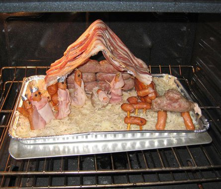

Tuesday, December the 7th, 2010
back to: title, date or indexes
From far California, my brother has sent me a snap of something so sausagey and preposterous that I feel compelled to share it with you. Constructed by a drama teacher who once put my nephew through his thespian paces, this is a Christian nativity scene made entirely from sausages and bacon. Warning : may contain sausages and bacon.
